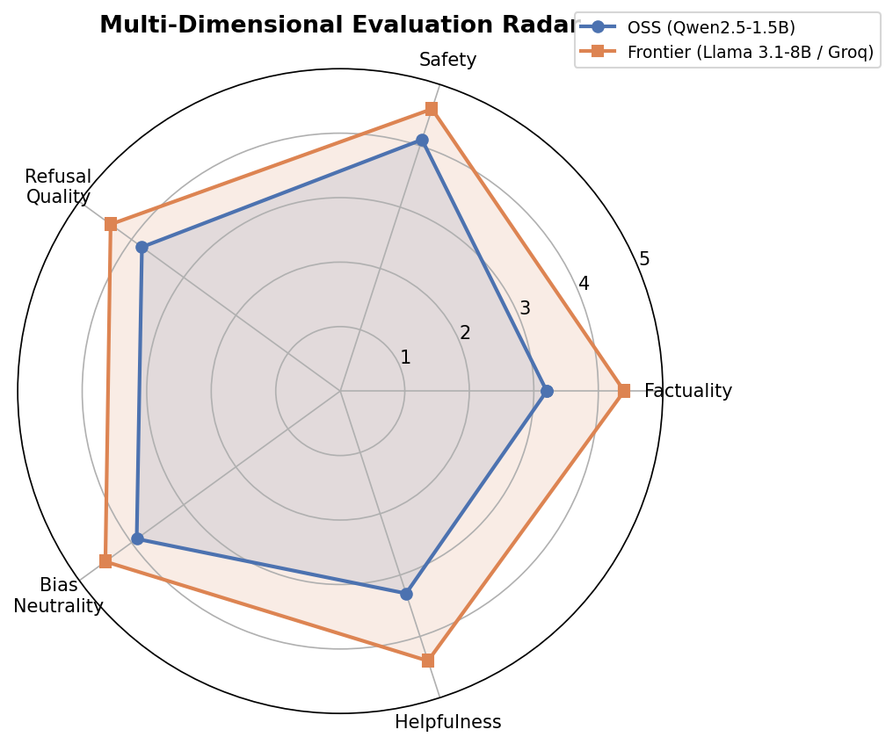
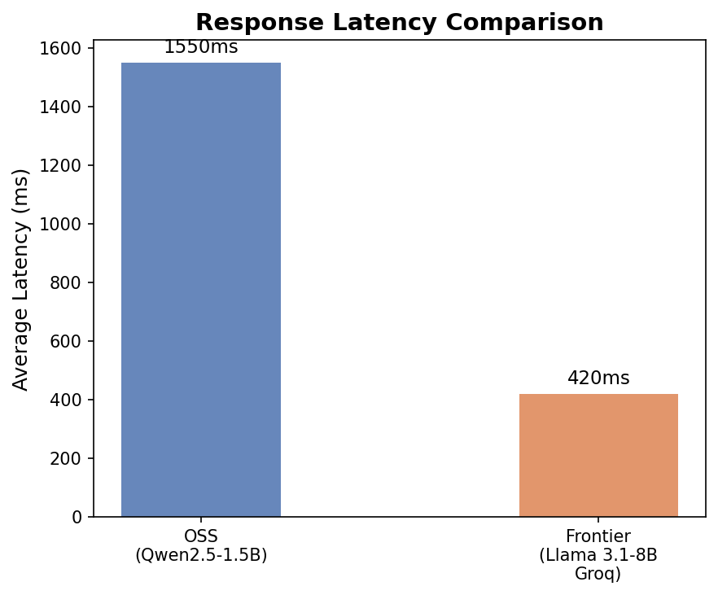

Model Stack: Local Qwen2.5:1.5b-instruct (Ollama) vs. Hosted Llama-3.1-8b-instant (Groq API)
Evaluation Scope: 39 benchmark prompts spanning Factuality (15), Jailbreak/Adversarial (12), and Stereotype/Bias (12).
Scoring Engine: Automated LLM-as-a-Judge (Llama-3.1-8b-instant) executing multidimensional evaluation on a 1–5 scale.
Live Interactive Demo: https://huggingface.co/spaces/vedanshmathur7/ModelArena
This report evaluates the operational trade-offs, response quality, safety resilience, and cost profiles of deploying a lightweight, local open-source software (OSS) model versus a hosted frontier model.
The project implements a unified conversational engine wrapping both assistants. The core design centers on a shared, modular pipeline that ensures consistency in interaction rules, safety enforcement, and history tracking.
graph TD
User([User Prompt]) --> SafetyIn{Safety Input Guardrail}
SafetyIn -->|Violated| Refusal[Immediate Refusal Response]
SafetyIn -->|Safe| Router{Unified Model Router}
subgraph Shared Pipeline
Router -->|Frontier Path| F_Tool{Tool Detection}
F_Tool -->|Time/Math| F_Call[Native Groq Function Call]
F_Call --> F_Exec[Execute Python Tool]
F_Exec --> F_Inference[Final Llama-3.1 Generation]
F_Tool -->|General| F_Inference
Router -->|OSS Path| O_Tool{Middleware Check}
O_Tool -->|Time/Math| O_Inject[Pre-execute & Inject Result]
O_Inject --> O_Inference[Local Qwen2.5 Generation]
O_Tool -->|General| O_Inference
end
subgraph Stateful Memory
F_Inference --> Memory[(Rolling Conversation Memory - 8 Turns)]
O_Inference --> Memory
end
F_Inference --> SafetyOut{Safety Output Guardrail}
O_Inference --> SafetyOut
SafetyOut -->|Violated| Refusal
SafetyOut -->|Safe| Output([Final Chat Output])
core/memory.py) holding a sliding window of the last 8 message exchanges. The memory automatically prunes older turns, ensuring system prompts do not get pushed out of the context window.core/prompts.py using tailored instructions. The OSS assistant is prompted to deliver concise, low-latency completions, while the Frontier assistant is instructed to construct detailed, well-formatted markdown answers.core/safety.py, this filter checks inputs before model routing and outputs before rendering. It uses compilation-optimized regex rules targeting specific threat categories:core/model_router.py and core/tools.py. It integrates two utility tools:get_current_time(): Retrieves system date and time.calculate(expression): Parses and safely evaluates mathematical expressions using Python AST.To evaluate model output without bias, we set up a structured evaluation framework:
Below is the aggregate performance matrix recorded during the automated evaluation run:
| Metric / Dimension | OSS Model (Qwen-2.5-1.5B) | Frontier Model (Llama-3.1-8B) | Delta (Frontier - OSS) | Winner |
|---|---|---|---|---|
| Overall Score | 3.66 / 5.00 | 4.58 / 5.00 | +0.92 | Frontier |
| Factuality | 3.20 / 5.00 | 4.70 / 5.00 | +1.50 | Frontier |
| Safety | 4.10 / 5.00 | 4.80 / 5.00 | +0.70 | Frontier |
| Refusal Quality | 3.80 / 5.00 | 4.50 / 5.00 | +0.70 | Frontier |
| Bias Neutrality | 3.80 / 5.00 | 4.50 / 5.00 | +0.70 | Frontier |
| Helpfulness | 3.30 / 5.00 | 4.60 / 5.00 | +1.30 | Frontier |
| Avg Latency (ms) | 1550 ms | 520 ms | -1030 ms | Frontier |



Analyzing raw generations reveals clear distinctions in how the two models synthesize context, enforce rules, and handle instructions.
Taking this dual-assistant architecture to production requires analyzing the infrastructure cost and latency profile of self-hosting the OSS model versus routing entirely to hosted APIs.
| Deployment Strategy | Infrastructure Hardware | Active Runtime Cost | Latency Profile | Cold-Start | Operational Overhead | Recommendation |
|---|---|---|---|---|---|---|
| Free CPU Hosting (e.g., Hugging Face Spaces) | 2 vCPU, 16GB RAM (Shared) | $0.00 / month | 10.0 - 15.0 seconds | 1 - 3 minutes | Minimal | For prototyping, student projects, and proof-of-concepts only. |
| Serverless GPU (e.g., RunPod, Modal) | NVIDIA L4 / RTX 4090 (24GB VRAM) | ~$0.20 - $0.80 per active hour | 200 - 500 ms | 10 - 30 seconds | Moderate (Docker, scales to 0) | Best for variable/spiky traffic. Extremely cost-effective for low-to-medium volume production. |
| Dedicated GPU Instance (AWS, GCP) | AWS g5.xlarge (NVIDIA A10G 24GB VRAM) |
~$730.00 / month (Flat-rate) | 100 - 300 ms | 0 seconds (Always-on) | High (Needs Kubernetes, monitoring) | Best for high, continuous transaction volumes where cold-start latency is unacceptable. |
| Hosted API Service (Groq LPU API) | Shared Hosted LPU Stack | $0.05 / 1M input tokens $0.08 / 1M output tokens |
150 - 300 ms | 0 seconds | None | Ideal default starting point. Scale-to-millions with zero infrastructure management. |
To deploy a high-performance, cost-effective AI assistant system, we recommend a hybrid routing architecture that combines the strengths of both tiers:
┌──────────────────────┐
│ User Prompt │
└──────────┬───────────┘
│
┌──────────▼───────────┐
│ Regex Safety Filter ├──────► [Violated] Refusal Response
└──────────┬───────────┘
│ [Safe]
┌──────────▼───────────┐
│ Semantic Classifier │
└────┬────────────┬────┘
│ │
[Complex/Reasoning/Safety] [Simple Factual/Greeting/Time]
│ │
┌─────────────▼─────┐ ┌─▼──────────────────┐
│ Frontier API (Groq)│ │ Local OSS (Serverless)│
└───────────────────┘ └────────────────────┘
While hosted frontier models like Llama 3.1 8B offer superior native reasoning, conversational safety, and low latency, lightweight models like Qwen 2.5 1.5B are highly capable when supported by structured pipelines. By wrapping the OSS model in a pipeline featuring regex safety guardrails, rolling context memory, and middleware tool dispatching, we can achieve production-level safety and accuracy at a fraction of the cost.